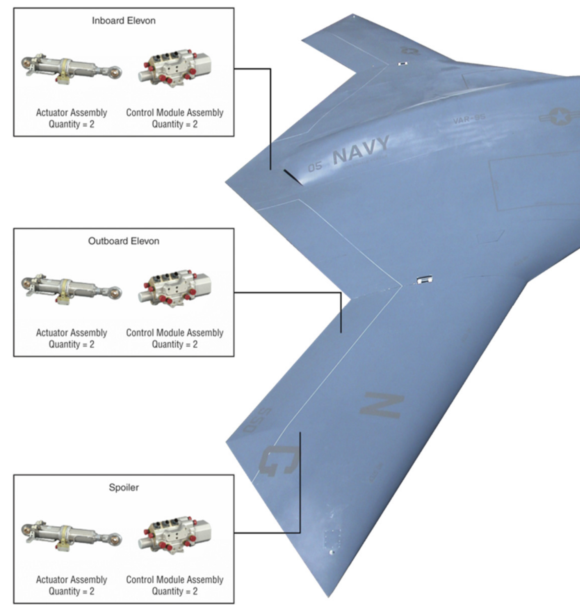
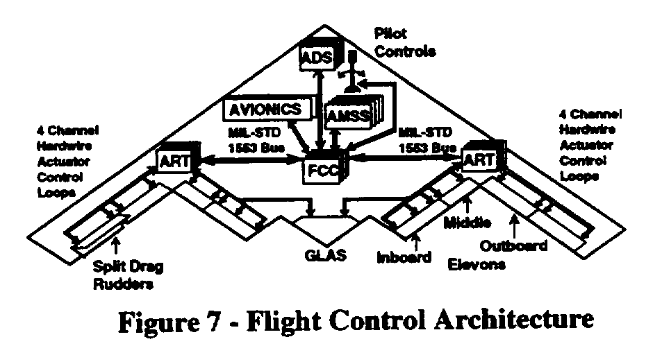
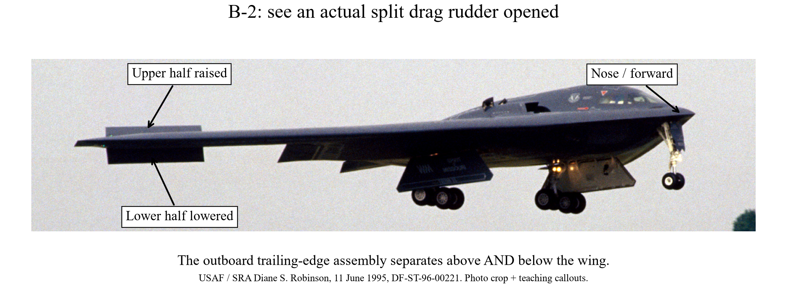

7A-12. X-47B and B-2: how do aircraft without a vertical tail control yaw?
Learning target: identify the physical effector, explain the change in force, obtain the yaw-moment sign, and trace the reaction into the wing. A vertical rudder is one way to generate yaw, not a requirement for yaw control.
7A-12a. X-47B: coordinate spoilers and trailing-edge controls
 X-47B unmanned demonstrator. U.S. Air Force / Rob Densmore, 4 February 2011. Photo and public-domain record.
X-47B unmanned demonstrator. U.S. Air Force / Rob Densmore, 4 February 2011. Photo and public-domain record.
Look first: trace the swept wings and their rear edges. There is no upright fin. This front/underside photograph is useful for the overall layout; upper-wing spoiler deployment and the individual commands are not resolved.

Where are the X-47B surfaces? The actuator supplier's aircraft illustration labels the inboard elevon, outboard elevon and spoiler. Original labels/leader lines retained; click to enlarge. Moog, Flight Control Technology, ABIMAQ workshop, May 2012, slide 70 / PDF p. 71. Open supplier slide. Source copyright retained; figure excerpt, not a new reconstruction.
Read the leader lines, not the actuator pictures: the photographs in the boxes show the mechanisms inside the aircraft; each line points toward its surface on the airframe. This is a wing-control detail: the nose lies outside the crop toward the upper right; the full slide is linked above. The inner and outer elevons lie along the trailing edge. The supplier locates its spoiler in the outer-wing region. This is an aircraft-specific location reference, whereas the section-view sketches below explain how the mechanisms move.
Terminology: elevon combines elevator-like pitch control with aileron-like roll control. Moog's first-flight announcement identifies aileron, elevon and spoiler flight surfaces. Its slide uses “outboard elevon.” Do not infer an additional surface from the two naming conventions, or relabel the X-47B spoiler as a B-2 clamshell.
Aircraft-specific evidence: published technical literature describes the X-47 approach as spoilers combined with trailing-edge control surfaces, citing Whittenbury's X-47B design-development paper. This is not simply the B-2's split-rudder arrangement. Open research paper, Introduction; design reference: Whittenbury, AIAA 2011-7041. The public research description establishes the mechanism family, not a complete X-47B command schedule.
Explain the physics step by step:
- Change aerodynamic loading on one side. Deploying a spoiler can increase drag and reduce lift on that wing. Coordinated trailing-edge motion changes the local loading as well.
- Use the drag difference for yaw. A net drag increase on the right acts behind the direction of travel at a right-side lever arm. Its yaw contribution turns the nose right; a greater left-side drag increment gives the opposite sign.
- Manage the coupled motion. The lift change also tends to roll the aircraft and can affect pitch. The other surfaces must be coordinated to obtain the requested combination of yaw, roll and pitch. Do not teach “raise a spoiler and obtain pure yaw.”
Structural bridge: spoiler pressure and trailing-edge panel pressure enter through two sets of hinge fittings and actuator anchors, then ribs, spars and skins. The yaw command therefore changes distributed wing loads, not just an abstract heading variable.
7A-12b. B-2 Spirit: split drag rudders on a crewed flying wing
 B-2 Spirit: a crewed aircraft, not a UAV. U.S. Air Force / Staff Sgt. Bennie J. Davis III, 30 May 2006. Original photo / public-domain record; image content unchanged.
B-2 Spirit: a crewed aircraft, not a UAV. U.S. Air Force / Staff Sgt. Bennie J. Davis III, 30 May 2006. Original photo / public-domain record; image content unchanged.
Locate: start at each wingtip and follow the outer trailing edge inward. The split drag rudders occupy the outboard trailing-edge regions. Elevons lie farther inboard, and GLAS is on the centerline aft edge. The overall photograph is not enough to distinguish every panel: use the manufacturer's labeled map next, then the real opened-surface photograph.
Documented hardware: Northrop Grumman engineers identify upper/lower split drag rudders for yaw, elevons for pitch/roll, and a centerline gust-load-alleviation surface. Their flight-control architecture drawing labels the outboard split rudders. Dreim, Jacobson and Britt, “Simulation of Non-Linear Transonic Aeroelastic Behavior on the B-2,” 1999, printed p. 515, Fig. 7 (PDF p. 83).

Source map: B-2 flight-control architecture. Figure 7 from the supplied NASA proceedings, printed p. 515 / PDF p. 83. Original labels retained. Full source page; paper / authors / public-use record. The scan has limited resolution; the reading guide below spells out the labels.
Read the B-2 map from the centerline toward either wingtip: GLAS → inboard elevon → middle elevon → outboard elevon → split drag rudder. There are three elevon pairs, not three surfaces total. Each outboard drag-rudder assembly has upper and lower portions. “Outboard elevon” is therefore not another name for “split drag rudder.”
Separate moving hardware from electronics: ADS = air-data system, AMSS = attitude/motion sensors, FCC = flight-control computer. These sense or command; they are not surfaces exposed to the flow. GLAS = gust-load-alleviation surface: the central moving panel participates in pitch control and load response.

Real hardware, not a sketch: the two black panels at the outboard trailing edge separate above and below the wing. USAF / SRA Diane S. Robinson, Le Bourget, 11 June 1995, DF-ST-96-00221. Original photograph / public-domain record. Cropped for clarity; teaching arrows added without altering aircraft geometry. The still image shows opening, not the instantaneous left/right yaw command.
- Open the two halves: upper and lower portions separate like a clamshell, increasing local drag.
- Make drag unequal: more right-side drag produces a nose-right yaw contribution; more left-side drag produces nose-left yaw. “More” can mean unequal openings, not necessarily one fully closed side.
- Distinguish yaw from braking: equal drag increments on both sides cancel their yaw contributions in an ideal symmetric model while adding braking drag. Actual lift/roll/pitch coupling need not vanish.
Structural bridge: both halves have pressure loads, hinge reactions and actuator reactions. Follow both load branches into the outer wing and wing box. The flight-control computer coordinates the hardware; it does not itself supply the aerodynamic force.
Which force changes, and what does the aircraft do?
| Physical control / location | Motion and aerodynamic change | Moment and structural consequence |
|---|
B-2 split drag rudder
Outboard trailing edge | Upper/lower halves separate. Local rearward drag increases; lift may also change. | Unequal left/right drag gives yaw; equal increments add braking drag. Each half loads its hinges and actuator anchors. |
Elevons
B-2: inner, middle and outer pairs
X-47B: supplier-labeled inner/outer panels | Panels change the section loading. In the simple attached-flow picture, trailing edge down tends to increase local upward force; up tends to decrease it. | Symmetric changes can command pitch; differential changes can command roll. Exact mixing varies. Hinge reactions enter the rear-wing structure and alter wing bending/torsion. |
X-47B spoiler
Outer-wing region in supplier illustration | Deploying a spoiler disrupts local flow: drag can increase and lift decrease. | Drag asymmetry contributes yaw; vertical-force asymmetry also contributes roll. Coordinated trailing-edge controls manage coupling. |
B-2 GLAS
Centerline trailing edge | Central-panel motion changes aft aerodynamic loading. | Pitch/load response rather than a wingtip drag-rudder role. In an ideal symmetric centerline model it has no lateral lever arm for direct roll. |
Two elevon examples — qualitative, not an aircraft command schedule: if aft upward force increases equally on both sides, its aft lever arm gives a nose-down pitch contribution. If the right wing gains upward force while the left loses it, the right wing rises and the left drops: left bank (negative roll about the forward body axis). Changing only one panel usually changes more than one moment.
Connect pressure to structure: the surface force is the resultant of distributed pressure and shear, not a force produced by the actuator alone. Pressure → movable panel → hinge fittings and actuator anchors → supporting ribs/rear spar/skins → wing box → root. Offsets from the wing's structural reference line also introduce torsion. Larger deflection does not mean a known force unless speed, angle of attack and aerodynamic response are specified.
7A-12c. One moment balance explains both approaches
 Read A and B as local mechanism sketches, then C as the whole-aircraft moment balance. These are teaching schematics, not measured reconstructions of either aircraft.
Read A and B as local mechanism sketches, then C as the whole-aircraft moment balance. These are teaching schematics, not measured reconstructions of either aircraft.
Reuse the body axes from 7A-3b: x forward, y right, z down, moments about the CG. For an isolated rearward force increment, ΔFx = −ΔD, ΔFy = 0. Thus:
ΔMz = xΔFy − yΔFx = yΔD.
Check pitch and roll with the same force: for an isolated upward increment ΔL, ΔFz = −ΔL. Its vertical-force contributions are ΔMx = −yΔL and ΔMy = xΔL. An aft surface has x < 0, so added upward force gives a nose-down contribution. These are force-arm contributions; the complete surface loading can also include aerodynamic couples and other force components.
Two-minute calculation — invented classroom loads, not aircraft measurements: place the right/left drag increments at y = ±4 m. Let ΔDR = 30 N and ΔDL = 10 N. Then ΔMz = 4(30 − 10) = +80 N·m: nose-right tendency. Total added drag is 40 N. With 20 N on each side, the same 40 N braking increment gives zero net yaw increment in this simplified model.
Link back to Lilienthal (7A-3b): an aft vertical rudder can generate yaw through xFy; an outboard drag device can generate yaw through −yFx. A tip vane can alter several force components. Name the force and lever arm before naming the control role.
Instructor check: ask students to sketch the two drag arrows, mark the CG, predict the yaw sign, and draw both hinge and actuator load paths. Then ask: “What extra aerodynamic information would you need to predict roll?” Answer: the accompanying vertical-force changes and their lever arms, not only the drag difference. Yaw moment alone also does not specify the aircraft's complete turn trajectory.